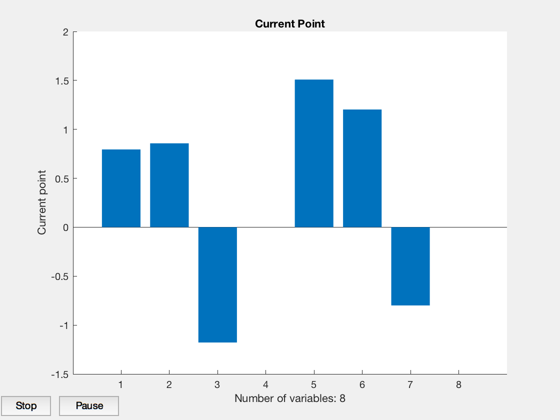
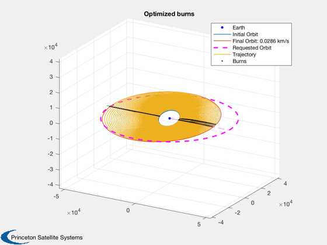
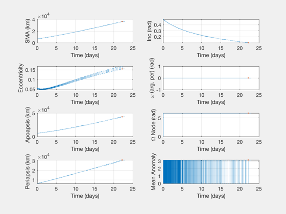
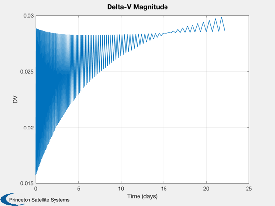
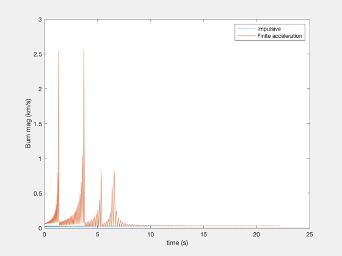
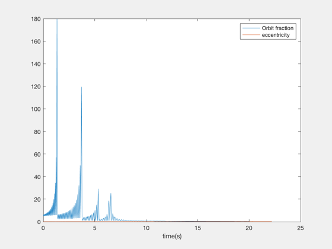

Contents
Impulsive 4X optimization with interpolated inner laps
LEO to GEO. Also compute losses from finite burns.
See also: OptimizeImpulsive4X, ArcLossConstEls, PlotImpulsiveTrajectory, PlotElementsImpulsive
%--------------------------------------------------------------------------- % Copyright (c) 2018 Princeton Satellite Systems, Inc. % All rights reserved. %--------------------------------------------------------------------------- frame = 1; elInitial = [6700 28*pi/180 0 0 0.05 0]; elFinal = [42000 0 0 0 0.001 0]; data = OptimizeImpulsive4X; % key,tween = 2,100: Takes 2 minutes. You'll need 1e-5 km/s^2 of accel. % key,tween = 3,200: Takes 15 minutes. You'll need 2e-6 km/s^2 of accel. data.keyLaps = 2; data.tweenLaps = 100; % Total laps are (key - 1)*tween + 1 totalLaps = (data.keyLaps-1)*data.tweenLaps + 1; % linear mass cost function costFun = @MassCostLinearFun; costData = MassCostLinearFun; costData.sigma = 350; restart = false; data.costFun = costFun; data.costData = costData;
run
if restart data.dvsPrev = out.keydVsF; end tic [burns, elOutput, out]=OptimizeImpulsive4X(elInitial,elFinal,[],data); toc OptimizerReport(out) PlotImpulsiveTrajectory(elInitial, burns, elFinal); title('Optimized burns'); PlotElementsImpulsive(elInitial, burns); dVs = reshape(out.tweendVsF,4,[])'; [time,tlabl] = TimeLabl(out.absTimes'); Plot2D(time,out.burns(:,1)',tlabl,'DV','Delta-V Magnitude')
Calculating initial feasible solution.
First-order Norm of
Iter F-count f(x) Feasibility optimality step
0 9 4.526510e+02 2.235e+01 2.004e+01
1 24 5.248941e+02 2.233e+00 3.982e+01 7.071e-01
Converged to an infeasible point.
fmincon stopped because the size of the current step is less than
the value of the step size tolerance but constraints are not
satisfied to within the value of the constraint tolerance.
Elapsed time is 9.108236 seconds.
Total Delta-V (km/s):
5.171793296599902
Number of burns:
202
Initial elements, target, achieved:
1.0e+04 *
Columns 1 through 3
0.670000000000000 0.000048869219056 0
4.200000000000000 0 0
3.639731075462559 0.000010093167045 0.000628318530718
Columns 4 through 6
0 0.000005000000000 0
0 0.000000100000000 0
0 0.000015471908522 0.000314159265359
Mission duration:
22.2027 Time (days)
Cost value:
5.248941440617245e+02
Iterations:
2
Constraint value:
2.233294609352976
Elapsed Time:
9.01457 sec
System mass:
524.894 kg
Masses:
1.0e+02 *
4.098692196874151 0.327895375749932 0.822353867993161
    Now with arc loss!
accel = 2e-6; dVsArc = [];tDurations = []; [~,~,elT] = BurnTimesImpulsive(elInitial,burns); elAtBurn = [elInitial;elT(1:(end-1),:)]; periods = Period(elAtBurn(:,1))'; for i = 1:size(burns,1) [dV,tDuration] = ArcLossConstEls(elAtBurn(i,:),burns(i,:),accel,frame); dVsArc = [dVsArc;dV]; tDurations = [tDurations;tDuration]; end fprintf('With impulsive burns, delta-V was %.4g km/s. \n',sum(abs(burns(:,1)))); fprintf('With an acceleration of %.4g km/s^2, delta-V was %.4g km/s. \n',accel,sum(abs(dVsArc))); fprintf('The maximum burn duration was %.4g seconds. \n',max(tDurations)); fprintf('The maximum proportion of orbit burning was %.4g. \n',max(tDurations./periods)); figure() plot(time,burns(:,1),time,dVsArc); xlabel('time (s)');ylabel('Burn mag (km/s)'); legend('Impulsive','Finite acceleration'); figure() plot(time,tDurations./periods,time,elAtBurn(:,5)); xlabel('time(s)'); legend('Orbit fraction','eccentricity'); %--------------------------------------
With impulsive burns, delta-V was 5.172 km/s. With an acceleration of 2e-06 km/s^2, delta-V was 24.64 km/s. The maximum burn duration was 1.283e+06 seconds. The maximum proportion of orbit burning was 179.8. 